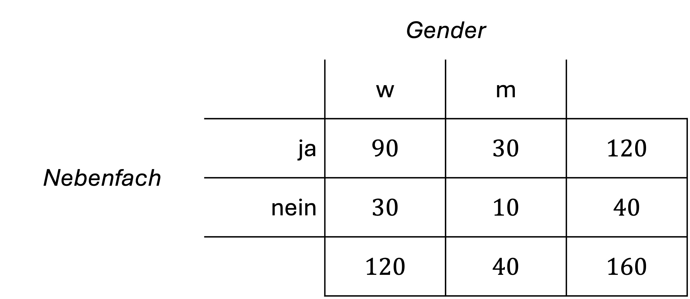

Übung 4
Hinweis: Die Formelsammlung zu dieser Übung finden Sie auf OLAT. Benützen Sie sie, wann immer Sie möchten.
Aufgabe 4.1
Wie gross ist die Wahrscheinlichkeit für \({\overline{A}}\), wenn \(P(A)=.25\) ist? Geben Sie an, welche Antwort korrekt ist.
- Die Wahrscheinlichkeit ist \(P\left(\overline{A}\right)=.25\).
- Die Wahrscheinlichkeit ist \(P\left(\overline{A}\right)=.75\).
- Die Wahrscheinlichkeit ist \(P\left(\overline{A}\right)=.50\).
- Die Wahrscheinlichkeit für \(\overline{A}\) kann nicht bestimmt werden.
Korrekt ist: b
Aufgabe 4.2
Was sagt die folgende Formel aus und welche Begriffe passen in die Lücken?
Wenn beide ________ A und B stochastisch ___________ sind, gilt für die Wahrscheinlichkeiten des gemeinsamen Auftretens der Ereignisse:
\[P\left(A\cap B\right)=P\left(A\right)\cdot P\left(B\right)\]
Multiplikationstheorem:
Wenn beide Ereignisse A und B stochastisch unabhängig sind, gilt für die Wahrscheinlichkeiten des gemeinsamen Auftretens der Ereignisse, dass das gemeinsame Auftreten der Ereignisse gleich wahrscheinlich ist, wie das Produkt der einzelnen Ereignisse.
Aufgabe 4.3
Wie gross sind folgende Wahrscheinlichkeiten?
- Mit einem fairen Würfel dreimal hintereinander eine 5 zu würfeln?
\(P\left(W\right)=\frac{1}{6}\cdot\frac{1}{6}\cdot\frac{1}{6}=(\frac{1}{6})^3=\frac{1}{216}=0.046\)
- In einem Kartenspiel mit 36 Karten gibt es vier Karten mit dem Wert 10. Nun werden nacheinander drei Karte gezogen. Wie gross ist die Wahrscheinlichkeit nacheinander dreimal eine 10-er Karten zu ziehen?
\(P\left(K\right)=\frac{4}{36}\cdot\frac{3}{35}\cdot\frac{2}{34}=\frac{24}{42840}=0.00056\)
- Wie gross ist die Wahrscheinlichkeit, wenn die jeweils verbleibenden Karten aus Aufgabe b. nach jeder gezogenen Karte neu gemischt werden?
Die Wahrscheinlichkeit verändert sich durch das Mischen nicht.
- Wie gross ist die Wahrscheinlichkeit, wenn die Karten nach jedem Zug wieder zurück in den Stapel gemischt werden und erst dann wieder gezogen wird?
\(P\left(K\right)=(\frac{4}{36})^3=(\frac{64}{46656})^3=0.0014\)
Aufgabe 4.4
Ein Fragebogen zu depressiver Symptomatik enthält 10 Items mit je den Antwortmöglichkeiten «trifft zu» und «trifft nicht zu». Wie viele verschiedene Möglichkeiten gibt es, den Fragebogen auszufüllen, wenn pro Frage immer eine Antwort ausgewählt wird?
\(P\left(FB\right)=2^{10}=1024\) Möglichkeiten
Aufgabe 4.5
Im Untertest „Bilderordnen“ des Hamburg-Wechsler-Intelligenztests (HAWIK) werden die Versuchspersonen aufgefordert, verschiedene grafisch dargestellte Szenen so in eine Reihenfolge zu bringen, dass sie eine sinnvolle Geschichte ergeben. Wie gross ist die Wahrscheinlichkeit, dass die richtige Reihenfolge von sechs Einzelbildern zufällig erraten wird (Aufgabe aus Bortz & Schuster, 2010)?
Das erste Bild muss aus sechs Bildern gewählt werden, das zweite nur noch aus fünf usw.. Mit jedem Ereignis (Bildwahl) ändert sich die Menge der Elementarereignisse des nächsten Zufallsexperiments. Somit ergibt sich:
\(P\left(B\right)=\frac{1}{6}\cdot\frac{1}{5}\cdot\frac{1}{4}\cdot\frac{1}{3}\cdot\frac{1}{2}\cdot\frac{1}{1}=\frac{1}{6!}=\frac{1}{720}=0.0014\)
Aufgabe 4.6
Eine Professorin behauptet hellsehen zu können. Wie gross ist die Wahrscheinlichkeit, dass die Professorin die Geburtsmonate von fünf Studierenden richtig «vorhersagen» kann? Wir wissen bereits, dass alle fünf Studierende in verschiedenen Monaten Geburtstag haben. Wir nehmen ausserdem an, dass alle Geburtsmonate die gleiche Auftretenswahrscheinlichkeit haben.
\(P\left(M\right)=\frac{5}{12}\cdot\frac{4}{11}\cdot\frac{3}{10}\cdot\frac{2}{9}\cdot\frac{1}{8}=\frac{120}{95040}=0.0013\)
Aufgabe 4.7
Am Bahnhof werden n = 100 Personen gefragt, ob sie einen Schirm dabei haben und ob es auf dem Weg zum Bahnhof geregnet hat. Nun wird zufällig eine Person ausgewählt und wir notieren, ob sie einen Schirm dabei hat und ob es auf dem Weg zum Bahnhof geregnet hat.
- Wie hoch ist die Wahrscheinlichkeit, dass die ausgewählte Person einen Regenschirm dabei hat?
\(P\left(Schirm\right)=\frac{30}{100}=0.3\)
- Wie hoch ist die Wahrscheinlichkeit, dass die ausgewählte Person bei Regen zum Bahnhof kam?
\(P\left(Regen\right)=\frac{50}{100}=0.5\)
- Wie hoch ist die Wahrscheinlichkeit, dass die ausgewählte Person keinen Regenschirm dabei hat?
\(P\left(\overline {Schirm}\right)=\frac{70}{100}=0.7\) (oder \(1-0.3\))
- Wie hoch ist die Wahrscheinlichkeit, dass die Person ohne Regen zum Bahnhof kam?
\(P\left(\overline {Regen}\right)=\frac{50}{100}=0.5\) (oder \(1-0.5\))
- Prüfen Sie anhand des Multiplikationstheorems, ob das Mitbringen eines Regenschirms und dass es auf dem Weg zum Bahnhof geregnet hat, unabhängige Ereignisse sind.
\(P\left(A\cap B\right)=P\left(A\right)\cdot P\left(B\right)\)
\(P\left(Schirm\cap Regen\right)=\frac{20}{100}=0.2\)
\(P\left(Schirm\right)\cdot P\left(Regen\right)=0.3\cdot 0.5=0.15\)
Die beiden Ereignisse sind stochastisch nicht unabhängig (d.h. abhängig).
Aufgabe 4.8
Bedingte Wahrscheinlichkeit: Bleiben wir beim Regenschirm-Beispiel.
- Wie hoch ist die bedingte Wahrscheinlichkeit, dass die Person einen Schirm dabei hat, wenn man weiss, dass sie bei Regen zum Bahnhof gekommen ist?
\(P\left(\left.Schirm\right|Regen\right)=\frac{20}{50}=0.4\)
- Wie hoch ist die bedingte Wahrscheinlichkeit, dass eine Person einen Schirm dabei hat, wenn man weiss, dass sie ohne Regen zum Bahnhof gekommen ist?
\(P\left(\left.Schirm\right|\overline{Regen}\right)=\frac{10}{50}=0.2\)
- Prüfen Sie auch mit der Formel der stochastischen Unabhängigkeit, ob die drei Ereignisse unabhängig sind: \(P\left(\left.B\right|{A}\right)=P\left(\left.B\right|\overline{A}\right)=P\left(B\right)\).
\(P\left(\left.B\right|{A}\right)=P\left(\left.B\right|\overline{A}\right)=P\left(B\right)\)
\(P\left(\left.Schirm\right|{Regen}\right)=\frac{20}{50}=0.4\) (rot eingefärbt)
\(P\left(\left.Schirm\right|\overline{Regen}\right)=\frac{10}{50}=0.2\) (grün eingefärbt)
\(P\left(Schirm\right)=\frac{30}{100}=0.3\) (blau eingefärbt)
Somit ist gezeigt, dass in diesem Beispiel die Wahrscheinlichkeit einen Schirm dabei zu haben nicht unabhängig davon ist, ob es auf dem Weg zum Bahnhof geregnet hat. Die Wahrscheinlichkeit, dass jemand unabhängig vom Wetter einen Regenschirm dabei hat ist 30%, diese Wahrscheinlichkeit steigt bei Regen auf 40% und sinkt bei keinem Regen auf 20%.
Aufgabe 4.9
Bayes-Theorem: Die Verbreitung einer Erkrankung in der Population beträgt \(1\)%. Beim Vorliegen der Erkrankung ist die Wahrscheinlichkeit \(0.90\), dass eine positive Diagnose erfolgt. Liegt dagegen die Erkrankung nicht vor, so wird mit einer Wahrscheinlichkeit von \(0.95\) eine negative Diagnose gestellt (Aufgabe aus Bortz & Schuster, 2010).
- Bestimmen Sie die Prävalenz, Sensitivität und Spezifität.
- Wie hoch ist die Wahrscheinlichkeit von „falsch Negativen“ \(P\left(\left.\overline{D}\right|{K}\right)\), d.h. erkrankten Personen mit negativer Diagnose?
- Wie hoch ist die Wahrscheinlichkeit von „falsch Positiven“ \(P\left(\left.D\right|\overline{K}\right)\), d.h. nicht-erkrankten Personen mit positiver Diagnose?
- Wie hoch ist die bedingte Wahrscheinlichkeit, dass die getestete Person auch wirklich krank ist, wenn der Test positiv ausfällt \(P\left(\left.K\right|D\right)\)?
Prävalenz \(P\left(K\right)=0.01\)
Sensitivität \(P\left(\left.D\right|{K}\right)=0.90\)
Spezifität \(P\left(\left.\overline{D}\right|\overline{K}\right)= 0.95\)
\(P\left(\left.\overline{D}\right|{K}\right)=1-P\left(\left.D\right|{K}\right)=1-0.9=0.1\)
\(P\left(\left.D\right|\overline{K}\right)=1-P\left(\left.\overline{D}\right|\overline{K}\right)=1-0.95=0.05\)
\(P\left(\left.K\right|{D}\right)=\frac{P\left(\left.D\right|K\right)\cdot P\left(K\right)}{P\left(\left.D\right|K\right)\cdot P\left(K\right)+P\left(\left.D\right|\overline{K}\right)\cdot P\left(\overline{K}\right)}\)
\(P\left(\left.K\right|{D}\right)=\frac{0.90\cdot 0.01}{0.90 \cdot 0.01+0.05 \cdot 0.99}=0.154\), das entspricht \(15.4\)%
Aufgabe 4.10
Knobelaufgabe
Im Studiengang Psychologie an der Universität Luzern sind 160 Studierende im ersten Semester eingeschrieben, davon 120 Frauen. Von allen Studierenden haben 30 Frauen keinen Kurs im Nebenfach gebucht. 30 Männer haben einen Kurs im Nebenfach gebucht.
Wie gross ist die Wahrscheinlichkeit, dass ein beliebiger Psychologiestudent keinen Kurs im Nebenfach gebucht hat?
Gesucht ist also die bedingte Wahrscheinlichkeit, keinen Kurs im Nebenfach gebucht zu haben («nein»), unter der Bedingung, dass es sich um einen Mann handelt (Gender «m»): \(P\left(\left.nein\right|{m}\right)\)
Die Angaben sind erfunden und entsprechen nicht unbedingt der Realität.
\(P\left(\left.nein\right|{m}\right)=\frac{10}{40}=0.25\)

Sie haben die Übungen für diese Woche geschafft. Bravo!
Reuse
Citation
@online{senn2024,
author = {Senn, Mirjam and Wyssen, Gerda},
title = {Übung 4},
date = {2024-10-07},
url = {https://psylu.github.io/statistik1-hs24/pages/exercises/exercise_04.html},
langid = {en}
}